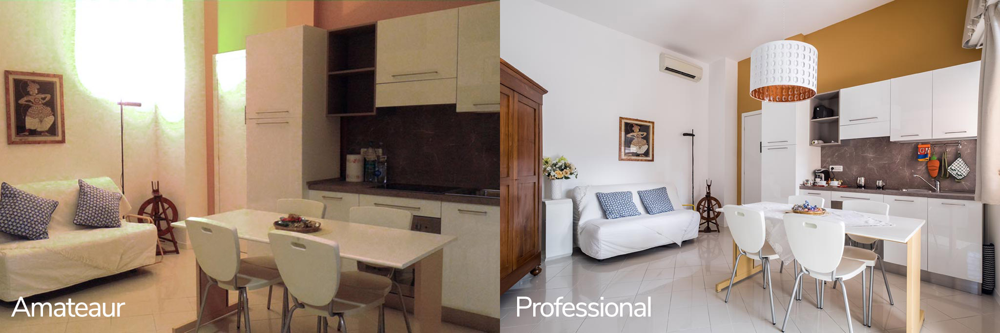

The Complete Analytical Process
| Phase | What Happens | Where It's Taught |
|---|---|---|
| 1. Primary Research | Ethnographic observation, stakeholder interviews, contextual inquiry | This course |
| 2. Systems Modeling | Mapping dynamics, feedback loops, root causes | This course |
| 3. Problem Definition | Bounding the problem, framing it precisely, making it actionable | This course |
| 4. Framework Application | Porter's, SWOT, financial models, decision matrices | Your other courses |
| 5. Recommendation | Strategic options, implementation plan, stakeholder management | Your other courses |
Before You Opened the Packet
Think about a case you've all analyzed.
Who are the most important stakeholders in that case?
Which of those stakeholders did the case author actually interview?
Do you know?
Before You Opened the Packet
What would you learn about that stakeholder if you spent 90 minutes observing them instead of reading a two-paragraph description in the case?
Before You Opened the Packet
Who decided that was the problem?
What if the real problem is something the case author didn't see because they didn't talk to the right people?
Before You Opened the Packet
Your framework is rigorous. But it can only analyze the data it's given.
What if the data is incomplete?
Today's Session
| Phase | What You Do |
|---|---|
| Prep | Identify the 5 critical assumptions in your analysis. Which ones would change your entire recommendation if wrong? |
| Discussion | Teams pair up. Brief the other team on your case. They find the weakest point. Switch. |
| Synthesis | Full class. What did the discussions reveal? |
| Prototyping | What to build and test before Monday. |
Prep: What Are You Assuming?
Team Activity
- List at least 5 assumptions your recommendation depends on
- Categorize each: Desirability, Feasibility, or Viability
- Rank: if wrong, does everything collapse or just a piece?
- Your top 2: the ones where everything falls apart
- For those top 2: what observable evidence would prove you wrong?
Desirability
Do stakeholders actually want this? Will they change behavior?
Feasibility
Can this work in the real context? Do the resources exist?
Viability
Should an organization invest in this? Is it sustainable?
Discussion: Pressure Test
Paired Teams
- Team A briefs their case: problem, recommendation, two critical assumptions. Conversational, not a presentation. (3 min)
- Team B interrogates. Challenge assumptions. Push on evidence. (8-9 min)
- Switch roles.
Questions worth asking:
- "What evidence do you have beyond your own intuition?"
- "You interviewed [N] stakeholders. How do you know that's representative?"
- "What if [alternative dynamic] is actually driving this?"
- "Why should I believe the problem is what you say it is?"
- "What evidence would make you walk away from this recommendation?"
What Did the Discussion Reveal?
- What assumption did the other team find that you didn't list?
- Based on what you just heard, what are you changing before Monday?
Three Tools, One Company
Before Monday, you need to build a prototype. Here's what that means, and what it doesn't.
Built to Run
A product you ship and keep running. It's rough, but it works as a service. You grow it into a business.
Built to Not Die
Pure scrappiness. Whatever it takes to keep the lights on and prove you won't quit.
Built to Learn
Tests one assumption with one real person. Might be disposable. Not built to last. Built to find out if you're right.
You're building a prototype. Not an MVP. Not a business. A test.
The MVP: Air Mattresses, 2007
Chesky and Gebbia can't make rent. Design conference in SF, hotels sold out. They buy three air mattresses, build a simple website: AirBed and Breakfast. $80/night. Breakfast included.
Three strangers show up and pay.
It became the business.

The Survival Tactic: Cereal Boxes, 2008
One year later. Airbnb is nearly dead. No funding, no traction, massive debt. The 2008 election is happening.
They design custom cereal: Obama O's and Cap'n McCains. 500 boxes each. $20 to make, $40 to sell. They sell out. $30,000. Enough to keep the lights on.
"If you can convince people to pay $40 for a $4 box of cereal, you can convince people to stay in each other's homes. You are cockroaches. You will not die."

The Problem: Would You Book This?

The Prototype: Photography, 2009
Studio Time: Plan Your Prototype
Team Activity: Answer three questions. Write them down.
- Which assumption are you testing?
Pick your riskiest one from the case discussion. - What's the smallest thing you can build to test it?
Not the whole solution. Just the test. - Who will you test it with, and when?
Name a real person. Pick a day before Monday.
A paper mockup. A role-played service encounter. A structured conversation. A one-page document in front of a decision-maker. It can be rough. A real person has to interact with it.
What You Practiced Today
Synthesize Information
Surfacing the assumptions buried in your own analysis. Separating evidence from conviction.
Learn From Others
Using adversarial questioning to find what you couldn't see from inside your own case.
Experiment Rapidly
Designing a prototype that tests your riskiest assumption with a real person before Monday.
Build and Craft Intentionally
Choosing the right fidelity for the right moment. Built to learn, not built to last.
Monday: Tell the Story of Your Project
- 9-minute block per team. Format is your choice.
- Three-act structure: The world as it is, what you learned, what you built and what happened when real people used it.
- Prototype required: Build and test something with at least one real stakeholder before Monday.
- Audience involvement: Meaningful, not token.
Deadlines:
- Saturday by 2:15 PM: Format rationale via email
- Monday in class: Present. Bring physical notebooks. Digital notebooks on Canvas by end of day.